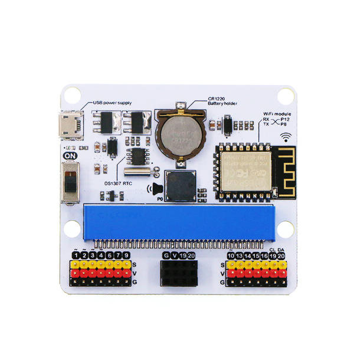

Inicio › Talleres › Smart Agriculture Kit
Conoce el Smart Agriculture Kit
Kit de ELECFREAKS con sensores para proyectos de agricultura: regar, vigilar el invernadero, iluminar cultivos o controlar un estanque.
La placa IoT:bit
IoT:bit es la placa de expansión del kit. Saca casi todos los pines de la micro:bit en conectores GVS (G tierra, V alimentación, S señal), así que cada sensor se enchufa con un solo cable de tres hilos. También lleva WiFi, reloj y zumbador. Se alimenta por USB (5 V). Pasa el ratón por los números.

1Alimentación USBEntrada de 5 V para toda la placa.2InterruptorEnciende y apaga la placa.3Reloj DS1307Guarda la hora (RTC).4Hueco para pila CR1220Mantiene la hora sin USB (pila no incluida).5Módulo WiFiUsa P8 y P12.6ZumbadorEn P0: suena con los bloques de Música.7Ranura de la micro:bitFíjate en el sentido de inserción.8Conectores GVS izquierdosP1, P2, P3, P4, P6, P7 y P9 (S señal, V alimentación, G tierra).9Conector I2CG, V, P19 y P20: pantalla OLED.10Conectores GVS derechosP10, P13, P14, P15, P16, P19 y P20.- 1Alimentación USBEntrada de 5 V para toda la placa.
- 2InterruptorEnciende y apaga la placa.
- 3Reloj DS1307Guarda la hora (RTC).
- 4Hueco para pila CR1220Mantiene la hora sin USB (pila no incluida).
- 5Módulo WiFiUsa P8 y P12.
- 6ZumbadorEn P0: suena con los bloques de Música.
- 7Ranura de la micro:bitFíjate en el sentido de inserción.
- 8Conectores GVS izquierdosP1, P2, P3, P4, P6, P7 y P9 (S señal, V alimentación, G tierra).
- 9Conector I2CG, V, P19 y P20: pantalla OLED.
- 10Conectores GVS derechosP10, P13, P14, P15, P16, P19 y P20.
Sensores y componentes
| Componente | Para qué sirve | Pin o puerto |
|---|---|---|
| Sensor de humedad del suelo | Mide si la tierra está seca (0 a 100) | GVS (P1 en el caso 1) |
| Sensor de nivel de agua | Mide el agua de un depósito (0 a 100) | GVS (P2 en el caso 1) |
| Sensor DHT11 | Temperatura y humedad del aire | GVS (P1 en el caso 2) |
| Sensor DS18B20 (sumergible) | Temperatura del agua | GVS (P1 en el caso 5) |
| Sensor PIR | Detecta personas o animales en movimiento | GVS (P2 en el caso 4) |
| Ultrasonidos sonar:bit | Mide distancias y alturas | GVS (P1 en el caso 4) |
| LED de colores (Rainbow LED) | Luz de cultivo o avisos | GVS (P1 en el caso 3) |
| Servo de 180° | Abre válvulas, compuertas o comederos | GVS (P9 en el caso 1) |
| Pantalla OLED | Muestra textos y números | I2C |
Montaje de la granja
El caso 13 monta una granja de cartón con todos los sensores. Las prácticas de este apartado se pueden hacer sin ella, con una maceta y un vaso de agua.
Instrucciones e imágenes de ELECFREAKS, mostradas desde su wiki. Desplázate dentro del recuadro para ver todos los pasos.
Extensiones
En MakeCode, busca iot-environment-kit (incluye la pantalla OLED). Para el LED de colores, añade neopixel.
Fuente: wiki de ELECFREAKS.
Documentación oficial
Smart Agriculture Kit en el wiki de ELECFREAKS: especificaciones, montaje y 13 casos con su programa.